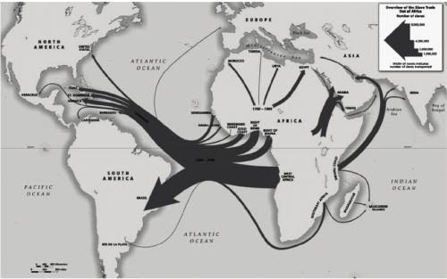
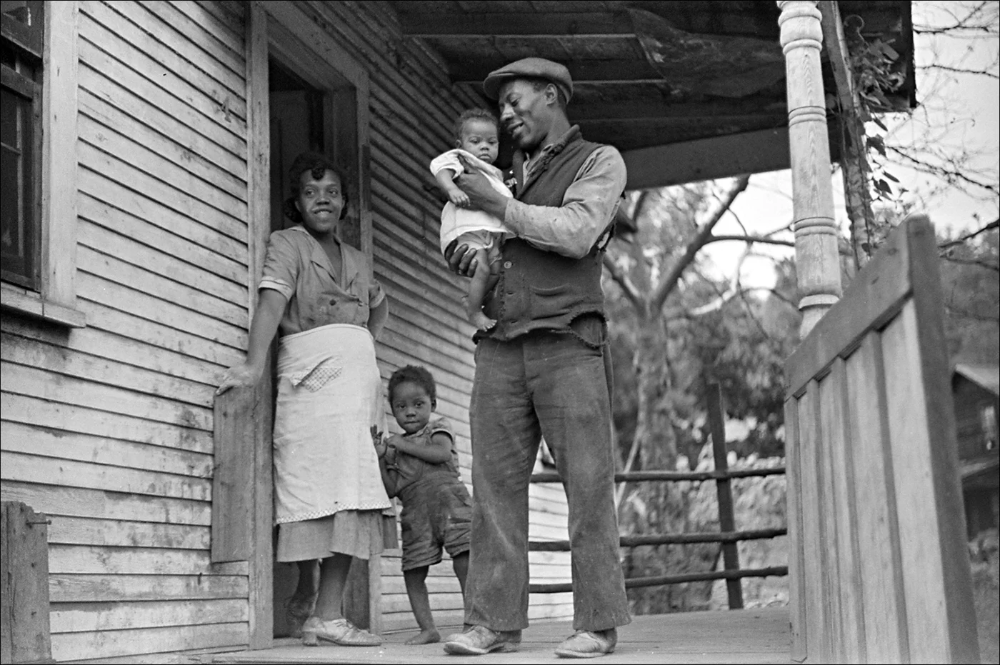

African-American English began as early as the 17th century, when the Atlantic slave trade brought African slaves into Southern colonies (which eventually became the Southern United States in the late 18th century). During the development of plantation culture in this region, nonstandard dialects of English were widely spoken by British settlers, which probably resulted in both first- and second-language English varieties being developed by African Americans. The 19th century's evolving cotton-plantation industry, and eventually the 20th century's Great Migration, certainly contributed greatly to the spread of the first of these varieties as stable dialects of English among African Americans.
African American Vernacular English
AKA Ebonics or Black English

Euro-American slave trade involved the transportation by slave traders of enslaved African people, mainly to the Americas. The slave trade regularly used the triangular trade route and its Middle Passage, and existed from the 16th to the 19th centuries.
African-American Vernacular (AAVE) is the native variety of the majority of working-class and many middle-class African Americans, particularly in urban areas, with its own unique accent, grammar, and vocabulary features. Typical features of the grammar include a "zero" copula (e.g., she my sister instead of she's my sister), omission of the genitive clitic (e.g., my momma friend instead of my mom's friend), and complexity of verb aspects and tenses beyond that of other English dialects (e.g., constructions like I'm a-run, I be running, I been runnin, I done ran). Common features of the phonology include non-rhoticity (dropping the r sound at the end of syllables),[10] the metathetic use of aks instead of ask, simplification of diphthongs (e.g., eye typically sounds like ah), a raising chain shift of the front vowels, and a wider range of intonation or "melody" patterns than most General American accents.
AAVE is often used by middle-class African Americans in casual, intimate, and informal settings as one end of a sociocultural language continuum, and AAVE shows some slight variations by region or city.
Well, How Do Their Sentences Work?
Standard English
African American Vernacular English
My child does not want to go to school
My child ain't wanna go to no school
That's Cool! Can I hear Someone Speak?
African-American Appalachian English
'Appalachian' is an interesting word, what is that?

Coal miner his wife and two of their children. Bertha Hill West Virginia. 1938.
Black Appalachian Americans have been reported as increasingly adopting Appalachian/Southern dialect commonly associated with White Appalachians. These similarities include an accent that is rhotic, the categorical use of the grammatical construction "he works" or "she goes" (rather than the AAVE "he work" and "she go"), and Appalachian vocabulary (such as airish for "windy"). However, even African-American English in Appalachia is diverse, with African-American women linguistically divided along sociocultural lines.
Despite its distinctiveness, AAAE shares many features with other varieties of Appalachian English, including the use of nonstandard pronunciation, grammar, and vocabulary. AAAE also shares features with other varieties of African American English, particularly those spoken in the South. For instance, a study of African American communities in the Appalachian region of Virginia found that the dialects of these communities shared many features with both African American English and Southern White English.
Well, How Do Their Sentences Work?
Standard English
Appalachian
My child does not want to go to school
Ma child don't wanna go to no school
That's Cool! Can I hear Someone Speak?
African Nova Scotian Vernacular English
Nova Scotia???
Viola Desmond, Canadian civil rights activist and businesswoman of African Nova Scotian descent.
African Nova Scotian English is spoken by descendants of Black Nova Scotians, black immigrants from the United States who live in Nova Scotia, Canada. Though most African-American freedom seekers in Canada ended up in Ontario through the Underground Railroad, only the dialect of African Nova Scotians retains the influence of West African pidgin. In the 19th century, African Nova Scotian English would have been indistinguishable from English spoken in Jamaica or Suriname.[28] However, it has been increasingly de-creolized since this time, due to interaction and influence from the white Nova Scotian population. Desegregation of the province's school boards in 1964 further accelerated the process of de-creolization. The language is a relative of the African-American Vernacular English, with significant variations unique to the group's history in the area.[29][30][example needed] There are noted differences in the dialects of those from Guysborough County (Black Loyalists), and those from North Preston (Black Refugees), the Guysborough group having been in the province three generations earlier.
Well, How Do Their Sentences Work?
Standard English
African Nova Scotian Vernacular English
My child does not want to go to school
My child don't wanna go to school
That's Cool! Can I hear Someone Speak?
Multicultural Toronto English
yeah, eh?
Quinton Armani Gardner professionally known as Pressa, performing artist and songwriter hailing from the neighbourhood of Jane and Finch Toronto
Multicultural Toronto English is the vernacular sociolect used within Canadian English of the Greater Toronto Area, particularly by younger working-class people in inner-city Toronto: an area known for its multicultural diverse population and Caribbean influences. It is spoken specifically within the Greater Toronto Area, Hamilton, Barrie, and Ottawa. To a lesser extent, these variants have emerged in other diverse neighbourhoods and urban Canadian cities as well, which include parts of Montréal, Calgary, and Edmonton.
The origin of unique Toronto vocabulary goes all the way back to its widespread migration from the Caribbean to Canada in the 1960s and 1970s, when the vast majority of people from places such as Jamaica, Trinidad, Barbados, and other Caribbean islands, as well as Guyana had largely migrated to Toronto and other parts of the region. People have also migrated to Canada from West Africa, East Africa, South Asia, and Southeast Asia.